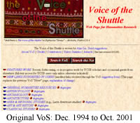

|
![[Spotlight On]](images/spotlight-on.gif) Today's
links, randomly drawn from VoS (
) Today's
links, randomly drawn from VoS (
)
Welcome to the new VoS. Started in 1994
as a suite of static Web pages, VoS has now been rebuilt as
a database that serves
content dynamically on the Web. Users gain greater flexibility
in viewing and searching, while editors are able to work more
efficiently and flexibly.
We've tried to maintain most of the original structure of the
site, which models the way the humanities are organized for
research and teaching as well as the way they are adapting to
social, cultural, and technological changes. But some shifts
in organization and navigation are necessary for technical reasons.
(Navigating
and Bookmarking VoS)
Important: the new VoS is still a work in progress,
but we have turned it on because it is already more functional
than the original site. There are still some mis-orderings of
categories and author names that we are fixing as we convert
our legacy resources. We've also temporarily removed as many
of the broken links as we could find and will restore them when
we can (or find substitutes). Some categories have thus been
temporarily decimated. If Michel Foucault wrote about The
Order of Things, then VoS may be said to be about "the
ordering of things"—the ceaseless reconfiguration
of humanities knowledge assisted by the new technologies of
dynamic information.
|
|
|
Currently, the site is best viewed in Internet Explorer 5+ and Netscape
6+. We are still working on full compatability with Netscape 4.x.
Other interface and usability improvements will be introduced in the
future.
In a later implementation phase of the new
VoS, users who have signed up for accounts
will have additional editorial privileges allowing them to maintain/revise
links that they have contributed. There will also be group accounts
that enable classes, organizations, conferences, etc. to build subsets
of VoS resources that will appear both on the regular VoS pages and
on a special page set aside for the group (e.g., the "English
130," "History 186," or "Conference 2001"
VoS Resources Page). VoS will thus be an open platform serving the
needs of both general and specific communities of users. (Contributions
will be subject to editorial review by Alan Liu and VoS editorial
assistants to maintain overall quality, consistency, and sense of
context.)
VoS is woven by Alan
Liu of the U. California, Santa Barbara, English
Department with a team of department graduate students and others.
Robert Adlington and Jeremy Douglass developed the SQL Server database
and ASP and VB code for the site (their creative ideas were instrumental
to the project). Brian Reynolds built the server machine for the database,
integrated it with the separate Web server, and oversaw networking.
Bo Kinloch took the lead in graphic design. And Andrea Fontenot, Christien
Hoffpauir, and Jennifer Jones assisted with editing and other tasks
during the migration to the new format.
|